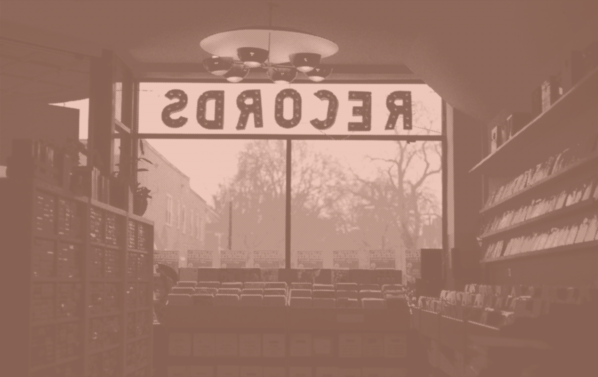
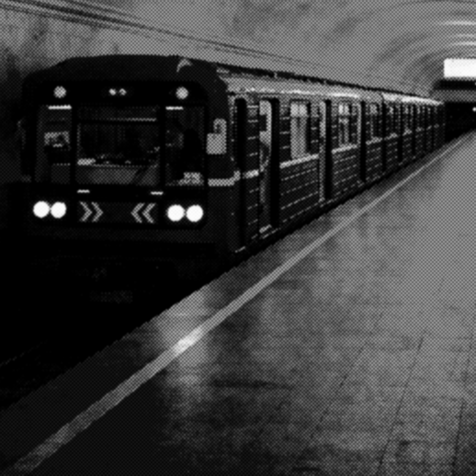
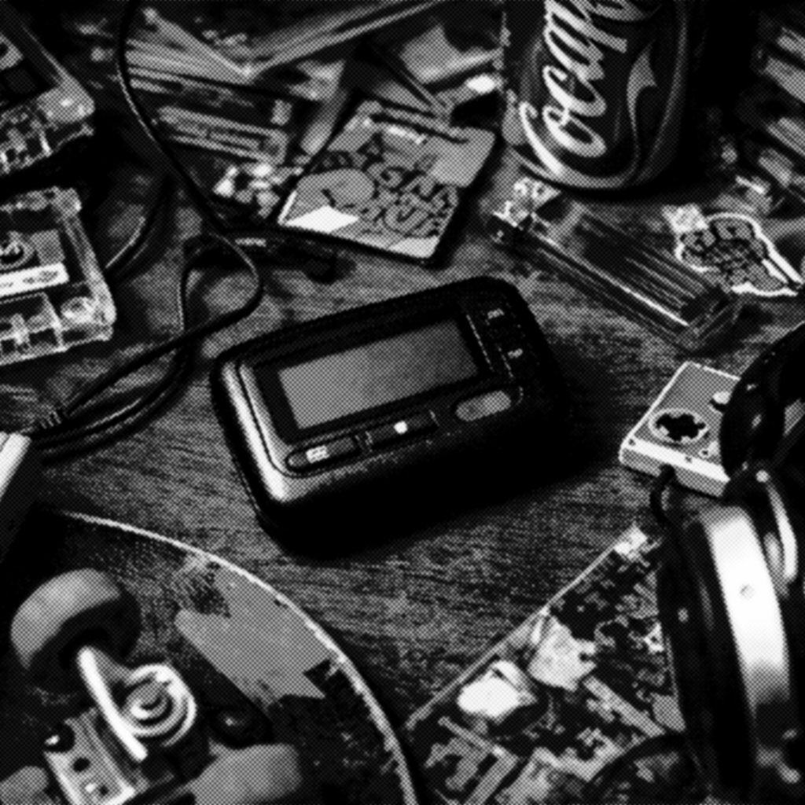

О проекте Revers
Цифровой архив звуков конца XX и начала XXI века. Проект собирает сигналы устройств, медиа и городской среды, которые формировали повседневную звуковую атмосферу эпохи ранних цифровых технологий
Цифровой архив звуков конца XX и начала XXI века. Проект собирает сигналы устройств, медиа и городской среды, которые формировали повседневную звуковую атмосферу эпохи ранних цифровых технологий
Звуки технологий редко сохраняются, хотя они формируют память эпохи. Сигнал запуска компьютера, шум телевизионного эфира или звук модема — всё это часть цифровой истории.
Проект Revers собирает и сохраняет эти аудиофрагменты, превращая их в архив звуков цифровой эпохи.

Система
Звуки операционных систем, прогрузок и так далее

Медиа
Звуки самых крутых и вайбовых медиа

Город
Звуки городов и разных ламповых мест

Устройства
Звуки самых используемых устройств и нынше нишевых

Многие звуки технологий легко узнаются даже спустя годы. Короткие сигналы запуска, уведомления программ и шумы техники стали частью культурной памяти цифровой эпохи.
Проект Revers собирает эти звуки, чтобы сохранить их как часть истории повседневной жизни.
Арина Кузнецова
Код и исследование
Полина Ложкина
Исследование, написание контента и СММ
Владислав Чурсин
Дизайн, код и презентация